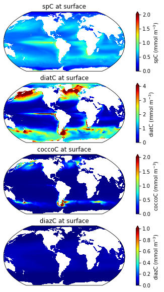
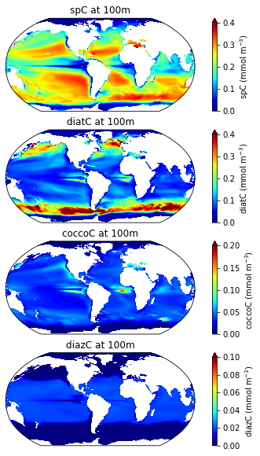

Phytoplankton biomass
%load_ext autoreload
%autoreload 2
import xarray as xr
from dask.distributed import Client
import catalog
import util
xr.set_options(keep_attrs=True)
/glade/work/kristenk/miniconda/envs/cesm-exp/lib/python3.7/site-packages/dask_jobqueue/core.py:20: FutureWarning: tmpfile is deprecated and will be removed in a future release. Please use dask.utils.tmpfile instead.
from distributed.utils import tmpfile
<xarray.core.options.set_options at 0x2b545c069d10>
import matplotlib.pyplot as plt
import cartopy
import cartopy.crs as ccrs
import pop_tools
ds_grid = pop_tools.get_grid('POP_gx1v7')
lons=ds_grid.TLONG
lats=ds_grid.TLAT
Parameters
casename = 'g.e22a06.G1850ECOIAF_JRA_PHYS_DEV.TL319_g17.scope_v1'
component = 'pop'
stream = 'h'
cluster_scheduler_address = None
assert component in ['pop']
assert stream in ['h', 'h.ecosys.nday1']
Connect to cluster
if cluster_scheduler_address is None:
cluster, client = util.get_ClusterClient()
cluster.scale(12)
else:
client = Client(cluster_scheduler_address)
client
Client
Client-d53ca664-e686-11ec-b4ab-3cecef1b157c
| Connection method: Cluster object | Cluster type: dask_jobqueue.PBSCluster |
| Dashboard: https://jupyterhub.hpc.ucar.edu/stable/user/kristenk/proxy/8787/status |
Cluster Info
PBSCluster
76fcdb7e
| Dashboard: https://jupyterhub.hpc.ucar.edu/stable/user/kristenk/proxy/8787/status | Workers: 0 |
| Total threads: 0 | Total memory: 0 B |
Scheduler Info
Scheduler
Scheduler-799ff3a0-ce06-41b9-8a22-72d9fbc4a404
| Comm: tcp://10.12.206.59:42586 | Workers: 0 |
| Dashboard: https://jupyterhub.hpc.ucar.edu/stable/user/kristenk/proxy/8787/status | Total threads: 0 |
| Started: Just now | Total memory: 0 B |
Workers
Load the data
dsets = catalog.to_dataset_dict(
case=casename,
component=component,
stream=stream,
)
dsets.keys()
dict_keys(['g.e22a06.G1850ECOIAF_JRA_PHYS_DEV.TL319_g17.scope_v1.pop.h'])
Compute long-term mean and plot
ds = dsets[f'{casename}.{component}.{stream}']
Variable list
variables =['diatC', 'coccoC','spC','diazC']
keep_vars=['z_t','z_t_150m','dz','time_bound','TAREA','TLAT','TLONG'] + variables
ds = ds.drop([v for v in ds.variables if v not in keep_vars])
ds.coccoC.isel(time=0,z_t_150m=0).plot()
<matplotlib.collections.QuadMesh at 0x2ae5a24516d0>
ds.coccoC.isel(time=6,z_t_150m=0).plot()
<matplotlib.collections.QuadMesh at 0x2ae5a4cc9710>
ds
<xarray.Dataset>
Dimensions: (time: 120, d2: 2, z_t: 60, z_t_150m: 15, nlat: 384, nlon: 320)
Coordinates:
* z_t (z_t) float32 500.0 1.5e+03 ... 5.125e+05 5.375e+05
* z_t_150m (z_t_150m) float32 500.0 1.5e+03 ... 1.35e+04 1.45e+04
TLONG (nlat, nlon) float64 dask.array<chunksize=(384, 320), meta=np.ndarray>
TLAT (nlat, nlon) float64 dask.array<chunksize=(384, 320), meta=np.ndarray>
TAREA (nlat, nlon) float64 dask.array<chunksize=(384, 320), meta=np.ndarray>
Dimensions without coordinates: time, d2, nlat, nlon
Data variables:
time_bound (time, d2) float64 dask.array<chunksize=(1, 2), meta=np.ndarray>
dz (time, z_t) float32 dask.array<chunksize=(1, 60), meta=np.ndarray>
photoC_sp_zint (time, nlat, nlon) float32 dask.array<chunksize=(1, 384, 320), meta=np.ndarray>
photoC_diat_zint (time, nlat, nlon) float32 dask.array<chunksize=(1, 384, 320), meta=np.ndarray>
photoC_diaz_zint (time, nlat, nlon) float32 dask.array<chunksize=(1, 384, 320), meta=np.ndarray>
photoC_cocco_zint (time, nlat, nlon) float32 dask.array<chunksize=(1, 384, 320), meta=np.ndarray>
spC (time, z_t_150m, nlat, nlon) float32 dask.array<chunksize=(1, 15, 384, 320), meta=np.ndarray>
diatC (time, z_t_150m, nlat, nlon) float32 dask.array<chunksize=(1, 15, 384, 320), meta=np.ndarray>
diazC (time, z_t_150m, nlat, nlon) float32 dask.array<chunksize=(1, 15, 384, 320), meta=np.ndarray>
coccoC (time, z_t_150m, nlat, nlon) float32 dask.array<chunksize=(1, 15, 384, 320), meta=np.ndarray>
Attributes:
title: g.e22a06.G1850ECOIAF_JRA_PHYS_DEV.TL319_g17.scope_v1
history: none
Conventions: CF-1.0; http://www.cgd.ucar.edu/cms/eaton/netcdf/CF-cu...
time_period_freq: month_1
model_doi_url: https://doi.org/10.5065/D67H1H0V
contents: Diagnostic and Prognostic Variables
source: CCSM POP2, the CCSM Ocean Component
revision: $Id$
calendar: All years have exactly 365 days.
start_time: This dataset was created on 2022-05-01 at 16:57:11.2
cell_methods: cell_methods = time: mean ==> the variable values are ...dt_wgt = ds.time_bound.diff('d2').squeeze()
dt_wgt /= dt_wgt.sum()
dt_wgt
<xarray.DataArray 'time_bound' (time: 120)>
dask.array<truediv, shape=(120,), dtype=float64, chunksize=(1,), chunktype=numpy.ndarray>
Dimensions without coordinates: time
Attributes:
long_name: boundaries for time-averaging interval
units: days since 0000-01-01 00:00:00ds = ds.weighted(dt_wgt).mean('time')
ds['spC'].isel(z_t_150m=0).plot()
<matplotlib.collections.QuadMesh at 0x2ae5a7ca37d0>
Phytoplankton biomass at the surface
######
fig = plt.figure(figsize=(8,10))
ax = fig.add_subplot(4,1,1, projection=ccrs.Robinson(central_longitude=305.0))
ax.set_title('spC at surface', fontsize=12)
lon, lat, field = util.adjust_pop_grid(lons, lats, ds.spC.isel(z_t_150m=0))
pc=ax.pcolormesh(lon, lat, field, cmap='jet',vmin=0,vmax=2,transform=ccrs.PlateCarree())
cbar1 = fig.colorbar(pc, ax=ax,extend='max',label='spC (mmol m$^{-3}$)')
ax = fig.add_subplot(4,1,2, projection=ccrs.Robinson(central_longitude=305.0))
ax.set_title('diatC at surface', fontsize=12)
lon, lat, field = util.adjust_pop_grid(lons, lats, ds.diatC.isel(z_t_150m=0))
pc=ax.pcolormesh(lon, lat, field, cmap='jet',vmin=0,vmax=4,transform=ccrs.PlateCarree())
cbar1 = fig.colorbar(pc, ax=ax,extend='max',label='diatC (mmol m$^{-3}$)')
ax = fig.add_subplot(4,1,3, projection=ccrs.Robinson(central_longitude=305.0))
ax.set_title('coccoC at surface', fontsize=12)
lon, lat, field = util.adjust_pop_grid(lons, lats, ds.coccoC.isel(z_t_150m=0))
pc=ax.pcolormesh(lon, lat, field, cmap='jet',vmin=0,vmax=2,transform=ccrs.PlateCarree())
cbar1 = fig.colorbar(pc, ax=ax,extend='max',label='coccoC (mmol m$^{-3}$)')
ax = fig.add_subplot(4,1,4, projection=ccrs.Robinson(central_longitude=305.0))
ax.set_title('diazC at surface', fontsize=12)
lon, lat, field = util.adjust_pop_grid(lons, lats, ds.diazC.isel(z_t_150m=0))
pc=ax.pcolormesh(lon, lat, field, cmap='jet',vmin=0,vmax=1,transform=ccrs.PlateCarree())
cbar1 = fig.colorbar(pc, ax=ax,extend='max',label='diazC (mmol m$^{-3}$)')

Phytoplankton biomass at 100m
######
fig = plt.figure(figsize=(8,10))
ax = fig.add_subplot(4,1,1, projection=ccrs.Robinson(central_longitude=305.0))
ax.set_title('spC at 100m', fontsize=12)
lon, lat, field = util.adjust_pop_grid(lons, lats, ds.spC.isel(z_t_150m=9))
pc=ax.pcolormesh(lon, lat, field, cmap='jet',vmin=0,vmax=0.4,transform=ccrs.PlateCarree())
cbar1 = fig.colorbar(pc, ax=ax,extend='max',label='spC (mmol m$^{-3}$)')
ax = fig.add_subplot(4,1,2, projection=ccrs.Robinson(central_longitude=305.0))
ax.set_title('diatC at 100m', fontsize=12)
lon, lat, field = util.adjust_pop_grid(lons, lats, ds.diatC.isel(z_t_150m=9))
pc=ax.pcolormesh(lon, lat, field, cmap='jet',vmin=0,vmax=0.4,transform=ccrs.PlateCarree())
cbar1 = fig.colorbar(pc, ax=ax,extend='max',label='diatC (mmol m$^{-3}$)')
ax = fig.add_subplot(4,1,3, projection=ccrs.Robinson(central_longitude=305.0))
ax.set_title('coccoC at 100m', fontsize=12)
lon, lat, field = util.adjust_pop_grid(lons, lats, ds.coccoC.isel(z_t_150m=9))
pc=ax.pcolormesh(lon, lat, field, cmap='jet',vmin=0,vmax=0.2,transform=ccrs.PlateCarree())
cbar1 = fig.colorbar(pc, ax=ax,extend='max',label='coccoC (mmol m$^{-3}$)')
ax = fig.add_subplot(4,1,4, projection=ccrs.Robinson(central_longitude=305.0))
ax.set_title('diazC at 100m', fontsize=12)
lon, lat, field = util.adjust_pop_grid(lons, lats, ds.diazC.isel(z_t_150m=9))
pc=ax.pcolormesh(lon, lat, field, cmap='jet',vmin=0,vmax=0.1,transform=ccrs.PlateCarree())
cbar1 = fig.colorbar(pc, ax=ax,extend='max',label='diazC (mmol m$^{-3}$)')
